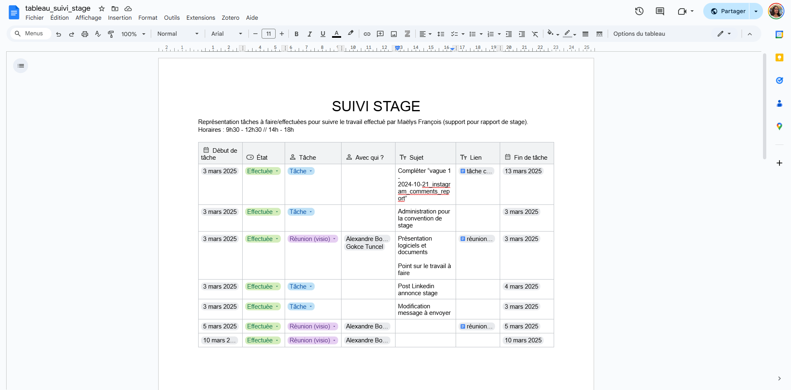
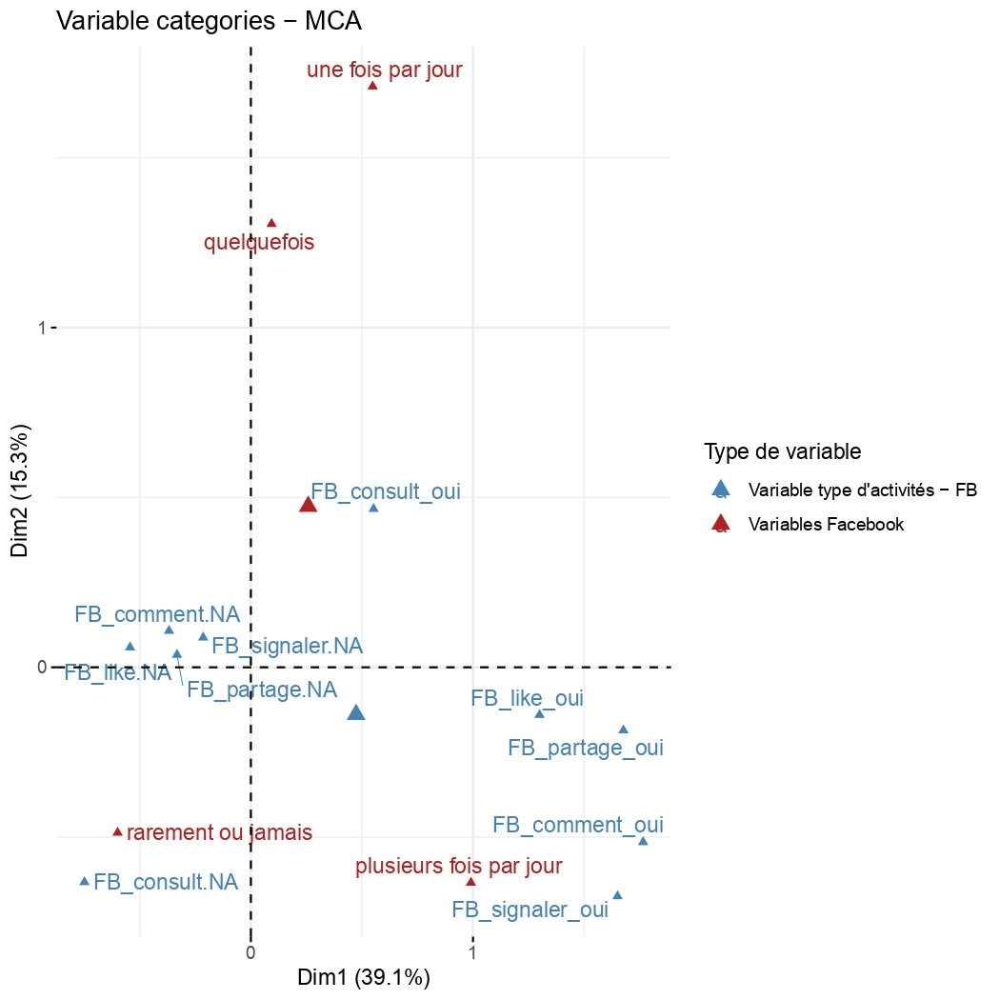
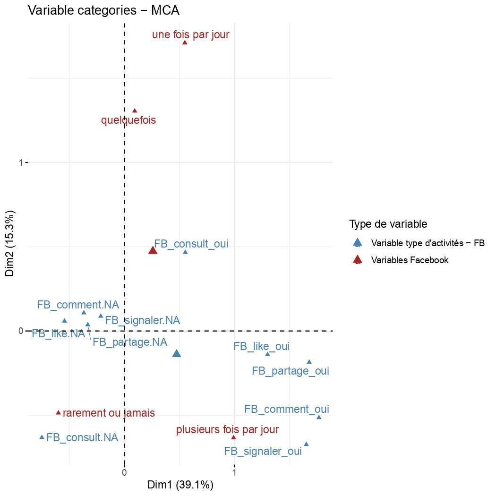

Collecte et analyse de données des réseaux sociaux numériques : Assistance au projet ANR AMULEX
1. Objectif du stage et du projet
Ce projet a été réalisé dans le cadre de mon stage en tant qu’assistante sur le projet ANR AMULEX (Analyse Multiplateforme de l’Expression politique en ligne), dont l'objectif principal était de collecter et d'analyser les données
issues des réseaux sociaux.
L'objectif de ma mission était de contribuer à l'administration d'un questionnaire en ligne (via LimeSurvey) aurpès d'un échantillon ciblé de commentateurs politiques, pour ensuite l'analyser statistiquement.
2. Présentation des données
La base de données sur laquelle j'ai travaillé est constituée des réponses au questionnaire en ligne qui a été passé lors de la première partie de mon stage. L'échantillon a été constitué par contact direct (messagerie privée ou tag) auprès d'utilisateurs ayant commenté des interviews de candidat.e.s à l'élection présidentielle française sur les plateformes suivantes :
L'échantillon analysé contient également des données de la plateforme Twitch. Ces données ont été récoltées par l'équipe du projet ANR AMULEX, notamment via des serveurs Discord, avant le début de mon stage. Cela justifie la présence de cette catégorie dans les analyses qui suivront.
Catégories de variables recueillies
| Catégorie | Détails |
|---|---|
| Sociodémographiques | Âge, genre, CSP, niveau de diplôme, etc. |
| Orientation politique | Échelle gauche-droite |
| Pratiques numériques | Fréquence d'utilisation et types d'activités (commenter, liker, partager, consulter) |
3. Nettoyage et préparation des données
La préparation et le nettoyage des données ont été réalisés à l'aide de logiciels d'analyse statistique comme R et Jamovi, ainsi que des outils de gestion comme Excel. J'ai mobilisé plusieurs outils et méthodes clés pour structurer les données issues du questionnaire et du processus de collecte :
- Documentation et suivi de la collecte : J'ai utilisé un document Word partagé avec mes tuteurs et tutrices qui m'a servi à documenter de manière exhaustive les tentatives de contacte, garantissant la fiabilité des informations et une maîtrise du suivi de la campagne d'enquête.
- Transformation des varibales pour les analyses : Certaines données issues du questionnaire ont été transformées en variables ordinales (par exemple, "plusieurs fois par jour" est devenu "1"). Cette transformation était nécessaire pour l'analyse réalisée sur Jamovi.
4. Stratégies de collecte

La collecte des données a été menée par vagues accompagnée d'une adaptation constante afin de surmonter les défis méthodologiques et techniques spécifiques à chaque plateforme.
- Objectif : Contacter le plus de commentateurs.
- Suivi : Utilisation d'un fichier Excel pour suivre les tentatives de contact.
- Difficultés : Le principal obstacle a été le filtrage des messages par Instagram ("utilisateur qui restreint les nouveaux messages"), limitant l'efficacité des relances.
- Problème : YouTube ne dispose pas d'une messagerie privée pour le contact direct et ne permet le tag que de 100 comptes par jour.
- Solution : Création d'une chaîne YouTube dédiée avec une vidéo explicative, et contact des enquêtés par tag sous le post de la vidéo par tranche de 100, suivi des relances sur Instagram.
5.1. Statistiques descriptives
-
Objectif : Cartographier la population enquêtée.
Les statistiques descriptives constituent la première étape de l'analyse. Elles ont permis de décrire les principales caractéristiques sociodémographiques des informations collectées avant de se lancer dans des analyses plus complexes.
-
Méthodologie : Statistiques descriptives sur Jamovi.
Utilisation du logiciel Jamovi pour générer des statistiques descriptives univariées (moyennes, écarts-types).
-
Contribution à l'enquête : Profil type de l'échantillon.
L'échantillon final sur lequel porte cette analyse est constitué de 177 répondants. Dans le cadre du projet, ces statistiques descriptives ont servi à poser un profil type des commentateurs en les comparant selon les plateformes de commentaires : X et Instagram, YouTube (échantillon aléatoire + gros commentateurs) et finalement Twitch.
Ainsi, l'objectif est d'analyser la distribution des variables sociodémographiques (âge, genre, CSP, niveau de diplôme) pour obtenir une vue d'ensemble de l'échantillon de commentateurs.Profil Sociodémographique Dominant de l'Échantillon Global
- Genre : Très largement masculin, les hommes représentant environ 72% de l'échantillon.
- Âge : Un échantillon relativement jeune, avec une moyenne d'âge nettement inférieure à 35 ans(moyenne d'année de naissance autour de 1989).
- Diplôme : Un niveau d'éducation élevé, avec une forte concentration de personnes très diplômées (Bac+4 et Bac+5).
- Orientation politique : Tendance politique fortement polarisée à gauche. Environ 70% des répondants se positionnent à gauche et à l'extrême-gauche de l'échiquier politique.
Ce profil met en lumière une population de commentateurs en ligne spécifique et peu représentative de la population française générale.
5.2. Analyse des Correspondances Multiples (ACM)
-
Objectif : Visualiser la relation entre plusieurs variables et les individus qui y sont associés
Elle permet de représenter sur un graphique les liens entre les différentes modalités de réponse, ainsi que la proximité entre les individus qui partagent des profils de réponse similaires. L'ACM a été employée pour définir les profils des enquêtés. En projetant sur un graphique les liens entre la fréquence d'utilisation de chaque plateforme et les types de comptes suivis, cette analyse permet d'identifier des groupes d'individus (chaque point sur le graphique représente un enquêté) ayant des pratiques numériques similaires. Cette méthode permet de révéler la diversité des profils d'utilisateurs et de s'assurer que l'échantillon recueilli représente un large éventail de comportements en ligne.
-
Méthodologie : ACM sur R
Le travail a été effectué à l'aide du package FactoMineR sous R. Les données ont été préparées en sélectionnant les variables pertinentes pour l'analyse, ici la fréquence d'utilisation et les types de comptes suivis sur la plateforme. Après avoir exécuté le script, l'ACM génère deux graphiques principaux : le graphique des individus (qui montre le positionnement de chaque enquêté) et le graphique des variables (qui visualise les liens entre les différentes catégories de réponses).
-
Contribution à l'enquête : Ciblage des profils et diversification de l'échantillon qualitatif.
L'identification de ces groupes est fondamentale. Elle a permis de guider la sélection des individus à recontacter pour la phase d'entretiens. En localisant les individus proches des pratiques d'engagement les plus extrêmes ou les plus diversifiées (ex: l'individu 126, très actif car proche des variables de fréquence élevée ("Plusieurs fois par jour") et de pratiques ("Partage", "Comment"...), l'ACM assure que l'échantillon couvre un large éventail de comportements en ligne.
 

5.3. Analyse en Classes Latentes (ACL)
-
Objectif : Découvrir des groupes d'usagers aux profils similaires (classes latentes).
S’appuyant sur les profils établis par les statistiques descriptives, l’ACL est une méthode statistique utilisée pour découvrir des groupes cachés (ou « latents ») d’individus à partir de leurs réponses à un ensemble de variables. Elle permet de segmenter les répondants pour identifier des profils typiques d’usagers des réseaux sociaux et de la politique en ligne (très actifs sur plusieurs plateformes, discrets, ou engagés sur une seule plateforme).
-
Méthodologie : ACL sur Jamovi (module snowRMM) et critère BIC.
L’analyse a été réalisée sur le logiciel **Jamovi**, en utilisant le module « snowRMM ». Les données issues du questionnaire ont été transformées en variables ordinales. Pour déterminer le nombre optimal de classes, l’analyse s’est basée sur le critère du **BIC (Bayesian Information Criterion)**, en retenant le modèle présentant la valeur la plus basse, ce qui garantit la meilleure adéquation statistique (le **modèle à 2 classes** a été retenu).
-
Contribution à l'enquête : Segmentation des usagers et corrélation sociodémographique.
L’ACL a permis d'identifier des groupes distincts d’individus basés sur la fréquence d’utilisation de différentes plateformes. Ces différences de genre, de CSP, de statut professionnel et d’orientation politique confirment que les pratiques en ligne sont étroitement liées à des facteurs sociodémographiques, renforçant l’idée que l’engagement numérique est structuré par des dynamiques sociales. Cette analyse est essentielle pour comprendre la dynamique des commentaires politiques en ligne, potentiellement dominés par une minorité de contributeurs assidus.
Synthèse des 2 classes d'utilisateurs identifiées par l'ACL
Le modèle à 2 classes est le plus pertinent. Les chiffres 1 à 4 représentent la fréquence d’utilisation des plateformes (1 = usage le plus fréquent).
- Classe 1 : Les « Hyper-Actifs » (17.7% de l'échantillon)
- Usage : Fréquence d’utilisation élevée (modalité 1, « plusieurs fois par jour ») sur **toutes** les plateformes (profil intensif et diversifié).
- Genre : Plus de femmes (48.15%) que d’hommes (37.04%).
- Âge : Moyenne de 36 ans (naissance 1989), avec une **grande dispersion** (Écart-type 19.2).
- Profil : Forte représentation des **étudiants** (29.63%) et des **inactifs** (51.85%).
- Politique : Surreprésentation de l’**extrême gauche** (22.22%) ou de la **gauche** (29.63%).
- Classe 2 : Les « Séléctifs/Occasionnels » (82.3% de l'échantillon)
- Usage : Fréquence bien plus faible, surtout sur Snapchat et Tiktok.
- Genre : Composée **majoritairement d’hommes**.
- Âge : Profil plus mature, moyenne de 38 ans (naissance 1987), avec une dispersion plus faible (Écart-type 14.6).
- Profil : Dominé par les **cadres** (36%) et les **salariés stables** (41.61%).
- Politique : La **gauche** est surreprésentée (41.45%).
La forte différence de fréquence d'utilisation entre les deux classes, confirmée par le croisement avec les données sociodémographiques, met en lumière une **minorité de contributeurs assidus** (Classe 1) qui pourrait avoir un rôle disproportionné dans la production de commentaires politiques en ligne.
- Classe 1 : Les « Hyper-Actifs » (17.7% de l'échantillon)
5.4. Analyse de Corrélation (Tests de liaison)
-
Objectif (Pourquoi) : Valider les liens entre les pratiques et les profils.
Vérifier la relation statistique entre les variables sociodémographiques (genre, âge) et la variable catégorielle de profil créée par l'ACL. Il s'agit de confirmer de manière rigoureuse si un profil est significativement plus masculin, ou s'il y a un lien statistiquement significatif entre l'âge et le type de plateforme utilisée.
-
Méthodologie (Comment) : Tests Khi-2, V de Cramer ou Tests T de Student.
Selon le type de variables testées (catégorielle vs. catégorielle pour les profils ; catégorielle vs. numérique pour l'âge), j'utiliserai le test approprié : Khi-2 (et V de Cramer pour la force) pour les variables catégorielles, ou un test T de Student/ANOVA si l'une des variables est numérique.
-
Contribution à l'Enquête (Qu'apporte-t-elle) : Solidification des résultats.
Ces tests statistiques fournissent la preuve scientifique (avec des p-values) que les différences observées entre les groupes (profils) ne sont pas dues au hasard. Cela ajoute de la rigueur et de la crédibilité à l'interprétation sociologique des profils identifiés lors de la classification.
6. Conclusion
En conclusion, ce projet met en lumière l'influence réciproque entre les réseaux personnels et les trajectoires de vie...
7. Compétences développées
- Maîtrise de R et d'analyse statistique...
- Gestion de données longitudinales...
- Analyse spatiale et des réseaux...
- Interprétation sociologique...